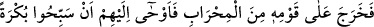
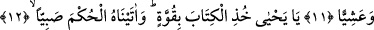
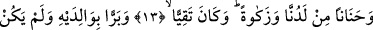
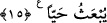

HZ. YAHYA’NIN
PEYGAMBERLİĞE SEÇİLMESİ
11. (Zekeriyya) Mabedden kavminin karşısına çıkıp onlara: “Sabah akşam
(Rabb’inizi) tesbih edin!” diye işaret etti.
12. “Ey Yahya, Kitab’ı kuvvetle tut” (dedik) ve ona çocuk iken hikmet verdik.
13. Katımızdan bir rahmet ve temizlik de verdik; o günahlardan korunan oldu.
14. O, ana babasına iyilik ediciydi, baş kaldıran bir zorba değildi.
15. Doğduğu gün, öleceği gün ve diri olarak kaldırılacağı gün ona selâm olsun!
Zekeriyya (a.s.) karısı hâmile kaldığı gecenin sabahı “mâbedden kavminin karşısına
çıktı.” Yani Hz. Zekeriyya namazgâhtan veya odadan onların karşısına çıktı, onlar ise
mabedin arkasında duruyorlar, kapının açılmasını ve içeriye girip namaz kılmayı
bekliyorlardı. Fakat onlar rengi değişmiş olan Hz. Zekeriyya’nın sessiz bir şekilde
huzura çıkışını yadırgadılar ve dediler ki: “Ey Zekeriyya sana ne oluyor böyle?” Bunun
üzerine Zekeriyya (a.s.) “onlara sabah akşam” Rabb’inizi “tesbih edin diye işâret
etti.” Yani işaretle, îmâ yoluyla sabah fecrin doğuşundan kuşluk vaktine kadar ve akşam
da güneş tam tepede iken başlayıp batıncaya kadar Allâh’ı tesbih etmelerini söyledi.
Âyette geçen “sabah akşam” kelimeleri zarf olup tesbih edilecek zamanı ifade ederler.
Ebü’l-Âliye’den nakledildiğine göre “sabah ve akşam”dan maksad, sabah ve ikindi
namazlarıdır. Ya da gündüzün iki tarafında (başında ve sonunda) Rabb’inizi tesbîh ve
tenzîh edin, yani “Sübhânellah” deyin demektir. Belki de Zekeriyya (a.s.), şükür olsun
diye Rabb’ini tesbih etmekle ve kavmine de bunu emretmekle memurdu. Nitekim el-
İrşâd’da böyle geçmektedir.
Fakir (Bursevî) der ki: Mânânın böyle olduğu açıktır. Çünkü burada tesbîhin anlamı,
iki ihtiyar kimseden çocuk olması uzak bir ihtimal olarak görülürken bunu
yaratamamaktan Allâh’ı tenzih etmektir. Çünkü Allah, her şeye gücü yetendir. Nitekim
bâzı zikirlerde: “Her şaşılacak şey için Allâh’ı tesbih ederim!”[8] ifâdesi vârid
olmuştur.
et-Te’vîlâtü’n-Necmiyye adlı eserde yukarıdaki âyetle ilgili olarak der ki: “Bu âyette